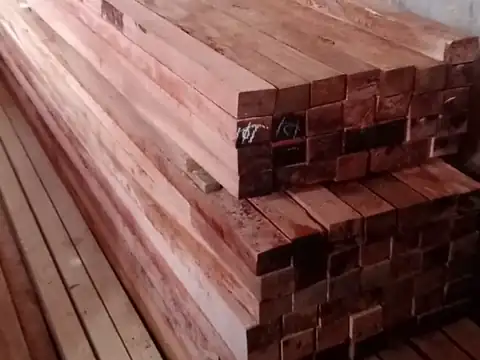
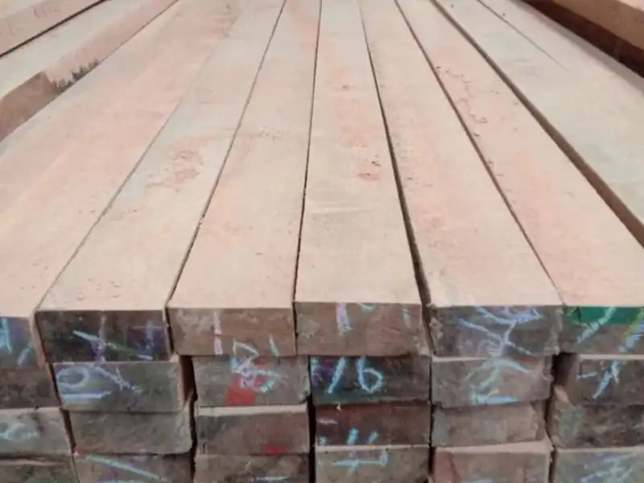
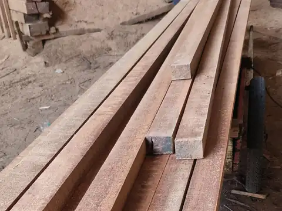
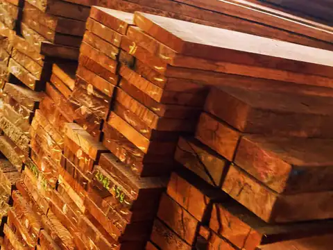
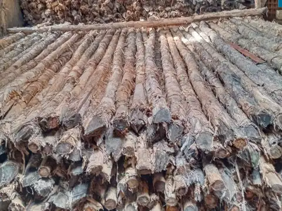
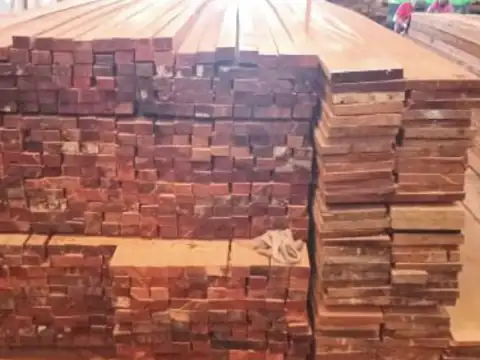
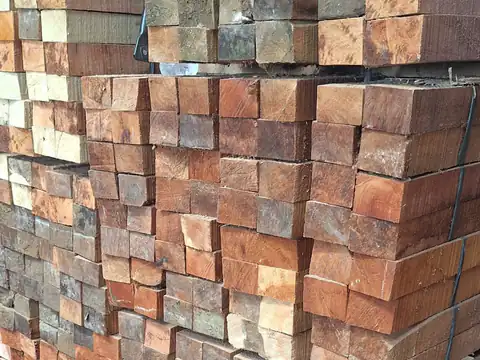
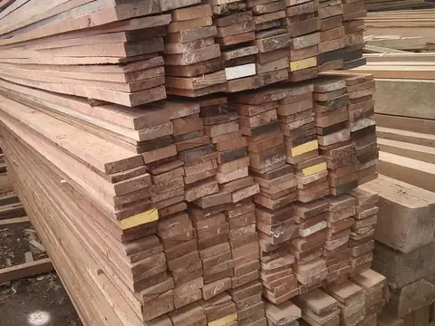

Kayu Kaso
Untuk rangka atap, plafon, bekisting cor, dan kebutuhan kayu kaso proyek lainnya.
PT Sinar Al Mubarokah menyediakan kayu kaso, kayu balok, papan, dan kayu dolken untuk kebutuhan proyek, kontraktor, toko bangunan, dan pembangunan rumah. Gudang kami di Pelabuhan Kali Baru Barat, Jakarta Utara, buka 24 jam.
WhatsApp: 0857-1111-1199 · Hubungi untuk harga terbaru


Untuk rangka atap, plafon, bekisting cor, dan kebutuhan kayu kaso proyek lainnya.

Untuk kuda-kuda, struktur, dan penopang. Ukuran menyesuaikan kebutuhan proyek.

Untuk bekisting, lantai kerja, dan berbagai keperluan konstruksi.

Kayu bulat untuk tiang penyangga (steger) cor dan perancah proyek.
Ketersediaan jenis & ukuran mengikuti stok. Hubungi untuk harga terbaru.



Harga mengikuti jenis kayu, ukuran, dan jumlah pesanan, serta bisa berubah. Hubungi kami via WhatsApp 0857-1111-1199 untuk harga terbaru.
Kirimkan ukuran dan panjang yang Anda butuhkan (misalnya kaso 4x6 atau 5x7, balok 5x10 atau 6x12) melalui WhatsApp, tim kami akan mengecek ketersediaan stok.
Bisa. Sampaikan daftar kebutuhan kayu proyek Anda (jenis, ukuran, jumlah, dan jadwal) via WhatsApp agar kami siapkan penawaran.
Informasikan alamat lokasi proyek Anda melalui WhatsApp, tim kami akan mengonfirmasi ketersediaan dan biaya pengiriman.
Klik tombol WhatsApp di halaman ini, kirim jenis kayu, ukuran, jumlah, dan lokasi. Kami akan membalas dengan harga terbaru dan detail pesanan.
Gudang kami berada di Pelabuhan Kali Baru Barat, Pergudangan Kayu, Jakarta Utara, dan buka 24 jam setiap hari (Senin–Minggu).
PT Sinar Al Mubarokah
Pelabuhan Kali Baru Barat, Pergudangan Kayu, Jakarta Utara, DKI Jakarta
Buka 24 Jam, Senin–Minggu
WhatsApp: 0857-1111-1199
Buka di Google MapsKirim daftar kebutuhan kayu Anda, kami bantu cek stok dan harga terbaru.
Pesan via WhatsApp 0857-1111-1199